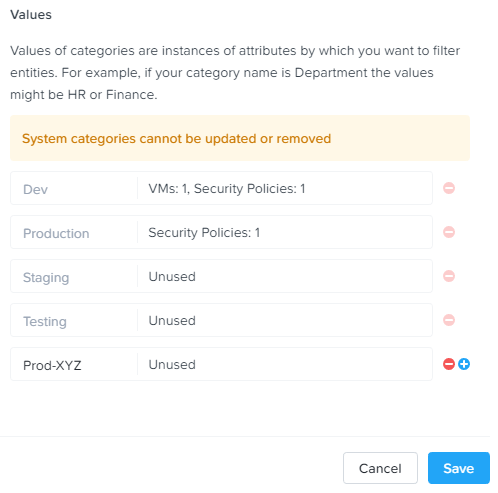
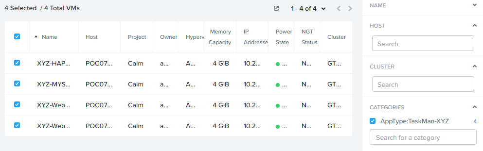
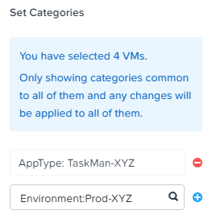
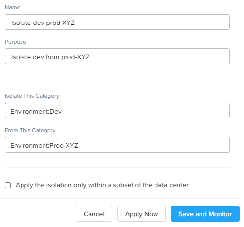

Isolating Environments¶
Isolation policies are used when one group of VMs must be completely blocked from communicating with another group of VMs without any whitelist exceptions. A common example is using isolation policies to block VMs tagged Environment: Dev from talking to VMs in Environment: Production. Do not use isolation policies if you want to create exceptions between the two groups, instead use an Application Policy which allows a whitelist model.
In this exercise you will create a new environment category and assign this to the Task Manager application. Then you will create and implement an isolation security policy that uses the newly created category in order to restrict unauthorized access.
Creating and Assigning Categories¶
In Prism Central, select > Virtual Infrastructure > Categories.
Select the checkbox for Environment and click Actions > Update.
Click the icon beside the last value to add an additional Category value.
Specify Initials-Prod as the value name.
Click Save.
In Prism Central, select > Virtual Infrastructure > VMs.
Click Filters and search for Initials- to display your virtual machines.
Note
If you previously created a Label for your application VMs you can also search for that label. Alternatively you can search for the AppType: TaskMan-Initials category from the Filters pane.
Using the checkboxes, select the 4 VMs associated with the application (HAProxy, MYSQL, WebServer-0, WebServer-1) and select Actions > Manage Categories.
Specify Environment:Initials-Prod in the search bar and click Save icon to bulk assign the category to all 4 VMs.

Creating an Isolation Policy¶
In Prism Central, select > Virtual Infrastructure > Policies > Security Policies.
Click Create Security Policy > Isolate Environments (Isolation Policy) > Create.
Fill out the following fields:
- Name - Initials-Isolate-dev-prod
- Purpose - Initials - Isolate dev from prod
- Isolate This Category - Environment:Dev
- From This Category - Environment:Initials-Prod
- Do NOT select Apply this isolation only within a subset of the datacenter. This option provides additional granularity by only applying to VMs assigned a third, mutual category.
Click Apply Now to save the policy and begin enforcement immediately.
Return to the Initials-WinClient-0 console.
Is the Task Manager application accessible? Why not?
Using these simple policies it is possible to block traffic between groups of VMs such as production and development, to isolate a lab system, or provide isolation for compliance.
Deleting a Policy¶
In Prism Central, select > Policies > Security Policies.
Select Initials-Isolate-dev-prod and click Actions > Delete.
Type DELETE in the confirmation dialogue and click OK to disable the policy.
Note
To disable the policy you can choose to enter Monitor mode, rather than deleting the policy completely.
Return to the Initials-WinClient-0 console and verify the Task Manager application is accessible again from the browser.
Takeaways¶
What are the key things you should know about Nutanix Flow?
- In this exercise you utilized Flow to quarantine a VM using the two modalities of the quarantine policy, which are strict and forensic.
- Quarantine policies are evaluated at a higher priority than application policies. A quarantine traffic can block traffic that would otherwise be allowed by an application policy.
- The forensic modality is key to allow limited access a quarantined VM while the VM is quarantined.